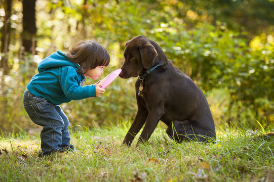
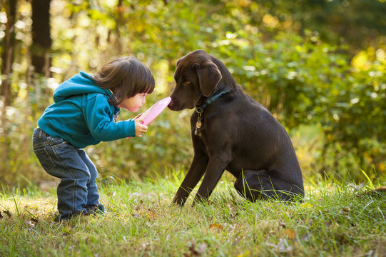

Welcome!
Welcome to the Second Chances Rescue's Website! Here you can find available pets for adoption, apply for foster programs, and more!
Welcome to the Second Chances Rescue's Website! Here you can find available pets for adoption, apply for foster programs, and more!
